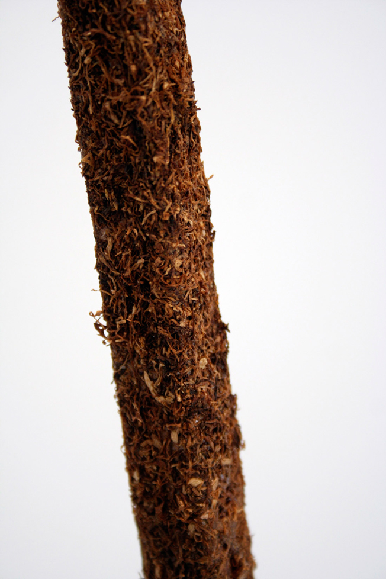
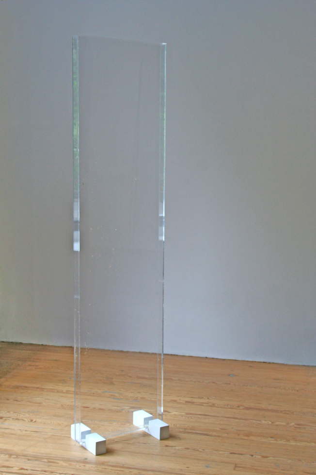

Kevin Boothe: If I’m not mistaken, you were born in Alberta. Did you grow up there as well? Can you talk a little bit about what that was like?
Elaine Cameron-Weir: Yes, I was born in central Alberta. My parents ran a greenhouse in an industrial park in Sylvan Lake for many years. That was nice growing up because my brother and I would just run around and make up our own things to do. We had a lot of freedom that way. I remember once spending an entire day looking through all the gravel in the parking lot hoping to find some kind of fossil. I found two- I think we still have them somewhere. I spent a lot of time on things like that.
Something that immediately struck me about your work was the materiality of it, the actual physicality of the objects themselves. What draws you to certain materials and what is the significance behind these choices?
Materiality is very important to me. The way I think about physicality is that you can have an actual object that somehow relates to other things in the world through it’s presence and the fact that it is a real thing existing in front of you or you can have an object that maybe alludes to these other things more through the associations of its materiality, almost like looking at an image.
Recently I was flipping through my notebook and I noticed that I had stopped doing the little sketches of ideas for work that I normally do and instead I just started making lists and groupings of various materials I wanted to combine in some way. Obviously you can’t divorce form from material, but I am finding myself increasingly attracted to the relationships between materials rather than the correlation between material and form. The material relationships aren’t meant to be narrative or symbolic though, it’s more like hoping things add up to some kind of over-riding mood or tone when put together.
 100 (Detail), 2010. Wood, rolling tobacco. 3/4” x 3/4” x 96”Another thing I really love about a lot of your work is the attention to detail, how some of the objects seem to almost have a ‘manufactured’ (for lack of a better term) perfection. (Especially some of the wall pieces) To me, it really brought up the idea of the idea of surfaces, and the illusions they sometimes can create. Is this something your consciously exploring? If so, what appeals to you about this idea?
I have been thinking a lot about truth to materials lately and how that relates to artificiality. For example, when something like a piece of brass or marble is polished, it’s surface is being changed in a synthetic way despite it remaining the same material through to the center. I think this is a kind of truth to materials but in an idealized way and that has to do with surfaces because surface is often thought of as something that is applied or somehow disjointed from what is carrying it. I guess the idea of something natural or inherent about a material being utilized as a means of finish or surface appeals to me because of that conflict between truth to material and faux finish.
 Plinth I and II, 2009. Ceramic, and glass. 4″ by 15″ by 15″ / 7″ by 17″ by 17″
Plinth I and II, 2009. Ceramic, and glass. 4″ by 15″ by 15″ / 7″ by 17″ by 17″
I’ve noticed within your work, two different subgroups of objects emerging. You have one set in which they are meticulously crafted and look almost futuristic to a certain extent. On the other hand, you have the objects that are the artists hand is more present and appear more ‘raw. ’ How did these two bodies of work come about? How do they co-exists with one another, and how important is the theme of duality to your practice?
I guess the work you’re referring to as more raw could be my newer work, which came about because my relationship to craft has changed. Before I was much more concerned with craft simply because I was learning how to physically make things and it excited me. At this point I by no means know everything about making objects, but I feel like I am more comfortable with the technical side of things so I don’t need to be proving something all the time. I also think sometimes seeking a high level of expertise in construction can be a way to seek comfort through the material because you have a very specific purpose in mind and in a sense it becomes a task to complete rather than a process that’s integral to the whole piece. For me that mindset can sometimes be detrimental so I have been moving away from it by having certain things fabricated when I can and really trying to figure out what is important for me to labor over and what isn’t.
A lot of your work —especially the circular wall pieces fall into a unique category. What Donald Judd might have called ‘specific objects.’ They have definite sculptural qualities, yet you don’t interact with them in a space as you would with a free standing sculpture. How conscientious of specific spatial interactions with the viewer are you when creating a new object?
I suppose I make wall pieces when I feel like I need to put some kind of form or limit to use as a vehicle. And in a way the dominant frontal view of the wall pieces appeals to me in the same way that symmetry and uniformity does (and to a certain extent the idea of surface and fields) in that there is something seemingly elementary yet very artificial at work.
 Advertisement, 2009. Photocopy, wood, paper. 47” x 36”
Advertisement, 2009. Photocopy, wood, paper. 47” x 36”
I recently saw a picture of your piece Advertisement, (2009) for the first time. To me it appeared very different from some of your other work. Would you mind talking about how that piece came about and some of the ideas behind it?
I had actually done a similar piece before that was really similar, but with brown poster paper instead of the large format photocopied image that’s in Advertisement. I was laminating the brown paper onto a rectangular form with the intention of using it for something else, but ended up being more interested in it just as it was. Even so, I wasn’t completely satisfied with the first version and had the idea to remake it in a way but without it being so much of a blank plane.
I was still interested in the idea of an absence but wanted it to be less of the surface of potentiality of a blank page and more something that had it’s own history.
I was thinking a lot about scent and perfume at that time and so I asked a friend of mine to design an advertisement image for me based on the idea of a perfume that would never exist. This is the image that is pasted on the piece. It has a sort of decayed look which appealed to me because in order to experience scent you must experience decay, disappearance and evaporation.
A short time ago, I read an article Harold Rosenberg had written in the late 60’s concerning definitions of art. I was struck by a quote he wrote "The less there is to see, the more there is to say." While your work is by no means minimalistic, there is a certain ambiguity to it. How important is writing to your practice? Do you feel someone needs extensive background knowledge to fully appreciate your work?
I write a lot about my work just for my own benefit, but it’s usually not something that I think needs to exist alongside or supplement my work publicly in order for it to be fully appreciated. However, I do feel that context is extremely important for any artwork, and writing is definitely part of constructing that context. I don’t think that writing aimed at injecting ideas or meaning into the work that is not already present is necessary or essential to garner some sort of experience. I guess context is created in numberless ways and I am interested in how that works as a whole and not only in relation to language. If there is text surrounding the work it should be used as a framing device rather than an explanatory tool.
 blond, 2010. Plexi-glass, chamomile, wood, rubber.74” x 18” x 2”Something I’m always interested is the idea of art reflecting larger shifts and ideologies within contemporary culture. How do you view your work in relation to larger society as a whole? Is this a goal you strive for?
I’m not trying to consciously reflect something back to the world that is already going on. Obviously art and many other things like design, architecture etc. mirror contemporary culture but often I think these things may only be visible in hindsight because what defines an era or an age becomes apparent only after it has passed. I think the passage of time and how it relates to the style of objects and what was in favor at a certain point is definitely an indicator of what was going on in the world in a particular place. I really think that the spirit of an age can be embedded in things in a physical way that can become recognizable. Maybe this has something to do with shared experience and memory.
Another aspect I’m extremely curious about is staying power. With so many images and ‘art’ being created currently, how does one distinguish which work is will still be important in the future and which is simply as Franz Meyer put it ‘art for the day.’ What do you think is a good indication of “staying power”? Which artists currently practicing are making important work that has the ability to remain significant in the future?
This is a very difficult question to answer. It’s hard to predict what at present will be important in the future and I’m not so sure it’s terribly important to figure out completely. Maybe it’s more useful to simply consider it without any hope for a decision or an answer. I think that maybe the hierarchy between classifying something as a relatively short lived trend and something that has a longer intellectual life is breaking down a little because information distribution is changing and getting faster. But at the same time I believe that history moves in cycles and things are consistently being recycled and all ideas are always around in some form or another.
I do think that this newness is real and sensed genuinely as such because it is always relative to experience.
To finish off, I was hoping you could provide some insight as someone working within larger arts community. Although no one likes to play fortuneteller, any thoughts of where you see installation based work going in the future? Are there any current trends or ideas being explored that you feel are particularly important?
I am not sure where things are going. I think often times I find myself more interested in the past, not in a nostalgic sense but just looking at what has happened and what has been extracted and recycled. I can’t really imagine anything that has ever happened, known or unbeknownst to me, that can be deemed irrelevant.
All images appear courtesy the artist. For more information please visit Elaine Cameron—Weir